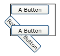
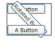

Практическое руководство. Определение источника преобразования с помощью относительных значений
В этом примере показано, как использовать относительные значения для указания источника RenderTransform , применяемый к FrameworkElement.
При повороте, масштабирование или наклон FrameworkElement с помощью RenderTransform свойство, значение по умолчанию применяет преобразование в верхний левый угол элемента. Если требуется выполнить поворот, масштабирование или наклон в центре элемента, можно скорректировать действие, задав центр преобразования в центре элемента. Но для этого способа требуется знание размера элемента. Более простой способ применить преобразование к центру элемента является установка его RenderTransformOrigin значение (0,5, 0,5), а не задавать значение центра преобразования.
Пример
В следующем примере используется RotateTransform для поворота Button 45 градусов по часовой стрелке. Так как в примере не задана центральная точка, то кнопка поворачивается вокруг точки (0, 0), т. е. левого верхнего угла. RotateTransform Применяется к RenderTransform свойство.
Ниже показан результат преобразования для следующего примера.

Поворот по часовой стрелке на 45 градусов с использованием свойства RenderTransform
<Border Margin="30"
HorizontalAlignment="Left" VerticalAlignment="Top"
BorderBrush="Black" BorderThickness="1" >
<StackPanel Orientation="Vertical">
<Button Content="A Button" Opacity="1" />
<Button Content="Rotated Button">
<Button.RenderTransform>
<RotateTransform Angle="45" />
</Button.RenderTransform>
</Button>
<Button Content="A Button" Opacity="1" />
</StackPanel>
</Border>
В следующем примере также используется RotateTransform для поворота Button 45 градусов по часовой стрелке, однако в этом примере устанавливается RenderTransformOrigin кнопки значение (0,5, 0,5). В результате кнопка поворачивается вокруг центра, а не вокруг левого верхнего угла.
Ниже показан результат преобразования для следующего примера.

Поворот на 45 градусов с использованием свойства RenderTransform с заданным для RenderTransformOrigin значением (0,5, 0,5)
<Border Margin="30"
HorizontalAlignment="Left" VerticalAlignment="Top"
BorderBrush="Black" BorderThickness="1">
<StackPanel Orientation="Vertical">
<Button Content="A Button" Opacity="1" />
<Button Content="Rotated Button"
RenderTransformOrigin="0.5,0.5">
<Button.RenderTransform>
<RotateTransform Angle="45" />
</Button.RenderTransform>
</Button>
<Button Content="A Button" Opacity="1" />
</StackPanel>
</Border>
Дополнительные сведения о преобразовании FrameworkElement объектов, см. в разделе Общие сведения о преобразованиях.